고객분들을 사랑의 길로 인도합니다.
“삼육의 사랑정신으로 고객분들께 사랑의 길로 안내해드리겠습니다.
삼육은 고객 분들을 언제나 사랑의 길로 인도해 드립니다.”
삼육식품은 1974년 자연 친화적 환경에 세워져 언제나 신선한 두유를 고객분들께 제공해 드리고 있습니다.
아름다운 자연경관과 신선한 재료들이 지금의 삼육두유를 만들수 있었습니다.
고객분들에게 사랑의 길로 인도해 드리겠습니다.
주소대한민국 충청남도 천안시 서북구 직산읍 성진로 354-13
전화번호041 575 3636
자가용으로 본사앞까지 북천안 톨게이트에서 10분이내로 도착 가능.
택시로 본사앞까지 성환역에서 10분이내로 도착 가능.
버스(160번)로 본사앞 정류장(판정2리)까지 성환버스터미널에서 20분이내 로 도착 가능.